Seus padrões de software, seguidos por qualquer agente de IA.
O Domain Harness registra os padrões de construção de software da sua empresa, entrega esses padrões aos agentes de IA no momento em que eles tomam decisões e verifica, antes da produção, se foram seguidos. Este guia mostra, com telas reais, como usar o painel de gestão.
O que é o Domain Harness
A IA colocou a construção de aplicações nas mãos de muito mais gente. Pessoas de negócio já criam ferramentas com Claude Code, Cursor e similares. O resultado costuma ignorar os padrões de arquitetura, segurança, código e design da empresa, e as áreas de tecnologia acabam escolhendo entre travar tudo (e virar gargalo) ou liberar tudo (e perder a governança).
O Domain Harness é uma camada entre os padrões da empresa e os agentes de IA. Ele cumpre quatro funções:
Registrar
Os padrões ficam organizados em módulos, com dono, versão e escopo.
Orientar
Durante a construção, o agente consulta o padrão certo via MCP, na hora da decisão.
Validar
Uma etapa no pipeline de CI (o Gate) verifica se a aplicação seguiu os padrões.
Dar visibilidade
O painel mostra o que está sendo construído, com quais ferramentas e quais desvios.
O mesmo padrão vale para qualquer ferramenta. Você escreve uma vez, e Claude Code, Cursor ou qualquer agente compatível com MCP recebem a mesma orientação.
Como funciona, de ponta a ponta
O painel (este guia) é onde a empresa organiza e acompanha tudo. O restante do ciclo acontece automaticamente:
O código e os prompts de quem constrói nunca saem da empresa. O painel recebe apenas registros resumidos (as Compilations): qual ferramenta, qual padrão foi consultado, se o Gate passou.
Papéis e permissões
Cada conta da empresa tem um papel. Todos veem as mesmas telas; o que muda é o que cada um pode alterar. Quando alguém tenta uma ação que não é do seu papel, o painel explica o motivo e nada é alterado.
Comprador / gestor
Normalmente o gestor de tecnologia, TI ou governança.
- Monta e reorganiza a árvore de projetos
- Cria módulos e escolhe seus donos
- Concede permissões de construção
- Trava regras e aceita desvios
- Define quem lê as orientações
Dono de padrões
Arquitetura, design, segurança ou dados.
- Publica e versiona padrões nos módulos que possui
- Escolhe em qual projeto cada padrão vale
- Acompanha onde os padrões estão em vigor
Construtor
Quem constrói aplicações com IA, muitas vezes sem perfil técnico.
- Cria aplicações nos projetos em que tem permissão
- Gera o kit inicial (Boilerplate) para sua ferramenta
- Consulta os padrões em vigor
| Ação no painel | Buyer | Standard owner | Builder |
|---|---|---|---|
| Criar subprojetos | Sim | Com permissão | Com permissão |
| Mover projetos (trocar o pai) | Sim | Não | Não |
| Criar módulos e atribuir donos | Sim | Não | Não |
| Publicar padrões | Não | No próprio módulo | Não |
| Travar regras (Locked rule) | Sim | Não | Não |
| Criar aplicação | Sim | Com build grant | Com build grant |
| Registrar aplicação existente | Sim | Não | Não |
| Aceitar um desvio | Sim | Não | Não |
| Ler orientações (Guidance) | Sempre | Se o Buyer liberar | Se o Buyer liberar |
Conceitos essenciais
O painel está em inglês. Abaixo, cada termo que aparece na tela, com o que significa.
- Project treeÁrvore de projetos
- A estrutura da empresa: unidades de negócio, tribos, produtos, aplicações. Você decide o significado de cada nível (o “Level name”). O projeto raiz é a própria empresa.
- ModuleMódulo
- Um conjunto de padrões de um tipo: code stack (linguagens, frameworks, bibliotecas) ou design system (componentes, tokens, imports). Cada módulo tem um único dono.
- StandardPadrão
- Uma regra publicada. Ex.: “biblioteca
momenté proibida; usedate-fns”. Cada alteração gera uma nova versão; as anteriores ficam guardadas. - Status
- approved (aprovado), required (obrigatório) ou prohibited (proibido).
- Project scopeEscopo
- O projeto em que o padrão passa a valer. Ele vale nesse projeto e em todos os projetos abaixo dele.
- Conflict slot
- O “assunto” de um padrão, por exemplo (code stack, library, “React”). Dois padrões diferentes não podem ocupar o mesmo assunto no mesmo projeto.
- Effective standardsPadrões efetivos
- O conjunto de padrões que realmente vale em um projeto, somando o que vem de cima. Em conflito, vence o projeto mais específico.
- Locked ruleRegra travada
- Um padrão que os projetos de baixo não podem contrariar. Só o Buyer trava.
- Build grant
- A permissão para uma conta criar aplicações em um projeto. Vale só para aquele projeto, não para os de baixo.
- Application
- Uma aplicação construída (ou já existente) que fica ligada a um projeto e passa a seguir os padrões dele.
- Boilerplate
- O kit inicial da aplicação para a ferramenta escolhida (Claude Code ou Cursor): arquivo de identificação, configuração MCP, instruções e dependências fixadas.
- Guidance endpoint
- O endereço do serviço da empresa que entrega as orientações aos agentes. É configurado uma vez pelo Buyer.
- Gate / Deviation
- O Gate é a verificação no CI. Cada padrão não seguido vira um Deviation (desvio) no log.
- Accepted deviationDesvio aceito
- Uma exceção registrada pelo Buyer, com justificativa, janela de validade e alertas periódicos.
- Compilation
- Registro resumido enviado pelo serviço da empresa ao painel (status do pacote, saúde do coletor, execuções do Gate). Nunca contém código, prompts ou o conteúdo dos padrões.
Primeiro acesso
Não existe senha. O acesso é feito por um link enviado ao seu e-mail corporativo, que a equipe do Domain Harness cadastrou para o piloto.
- Abra o endereço do painel que você recebeu, digite seu e-mail e clique em Email me a sign-in link.
- Abra o e-mail “sign-in” e clique no link. Ele vale por 15 minutos e funciona uma única vez.
- Pronto: você cai no Inventory. A sessão dura 12 horas; depois disso, basta pedir um novo link.
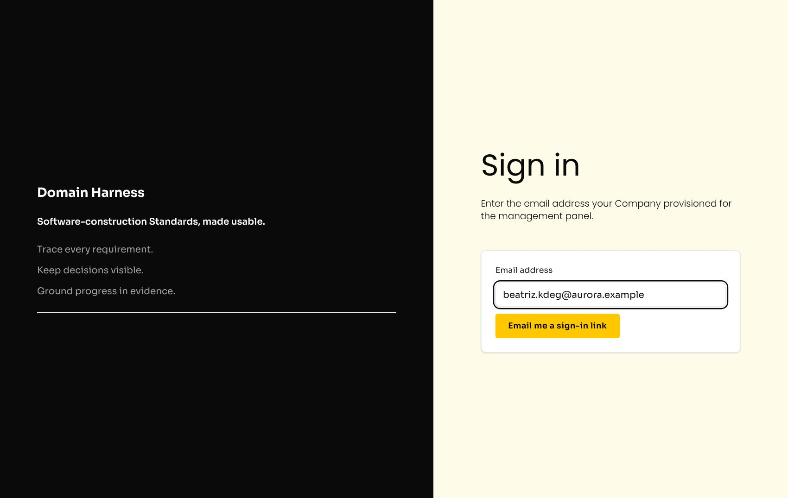
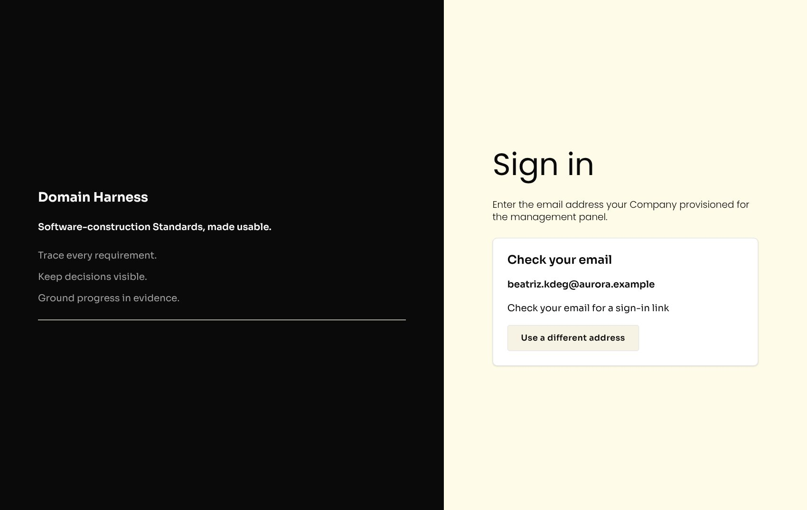
Por segurança, a tela mostra a mesma mensagem para qualquer e-mail válido, cadastrado ou não. Se o e-mail não chegar em alguns minutos, confira o spam e fale com a equipe do piloto.
Conhecendo o painel
À esquerda fica o menu, agrupado em três áreas. Embaixo dele aparecem seu papel e o botão Sign out.
Acompanhar
Inventory: todas as aplicações. Compilations: saúde do serviço da empresa.
Governar
Standards: módulos e padrões. Project tree: estrutura e permissões. Guidance access: quem lê as orientações.
Operar
New-application flow: criar aplicações. Accepted deviation: registrar exceções.
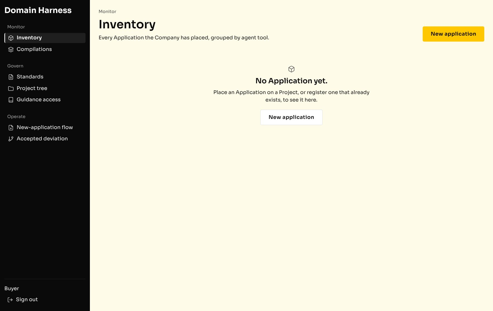
Toda ação mostra o resultado em uma faixa logo abaixo do título da página: confirmação (com borda escura) ou a explicação de por que nada foi alterado. Enquanto algo está sendo salvo, o botão mostra um indicador de carregamento e uma barra fina aparece no topo.
Monte a árvore de projetos Buyer
Comece pela estrutura. Ela define onde cada padrão vale e quem pode construir onde. No exemplo, a Aurora Pagamentos tem duas unidades de negócio (Cartões e Pix), e o Portal do Cliente fica dentro de Cartões.
- Abra Project tree e clique em Create project.
- Preencha Name, o Level name (o que esse nível significa para vocês, ex.: “Unidade de negócio”) e o Parent.
- Clique em Create Project. O novo projeto aparece na árvore, já aberta no lugar certo.
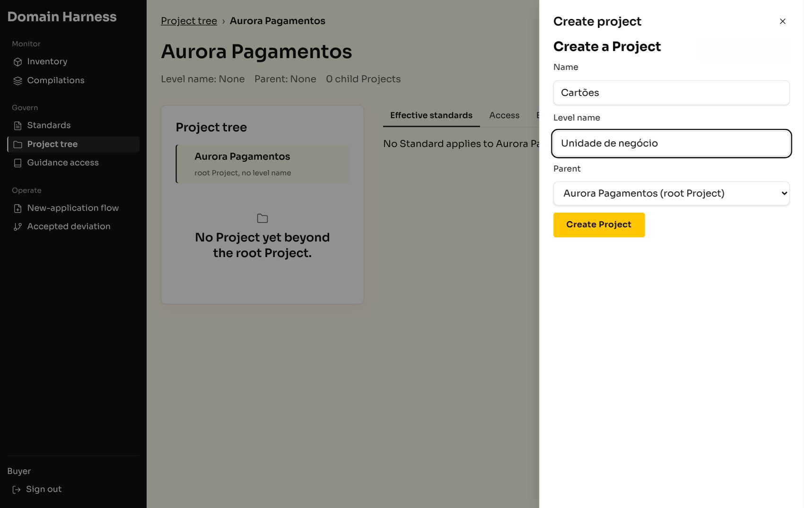
Para mover um projeto, selecione-o na árvore e use Change parent. Na árvore, as setas do teclado navegam e Enter seleciona.
Crie os módulos e escolha os donos Buyer
- Em Standards, clique em Create Module, dê um nome e escolha o tipo: code stack ou design system.
- Na linha do módulo, clique em Assign owner e escolha uma conta com papel Standard owner.
- Sem dono, ninguém consegue publicar no módulo. O resumo no topo mostra quantos módulos estão Without an owner.
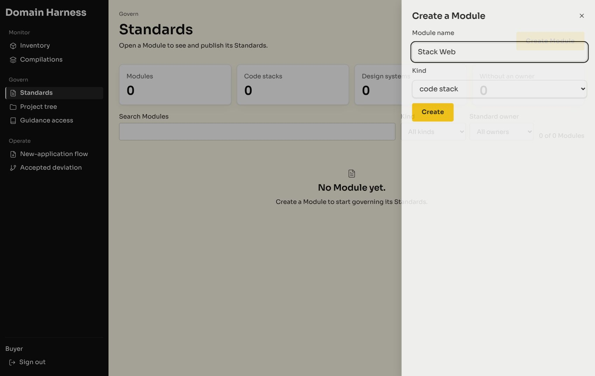
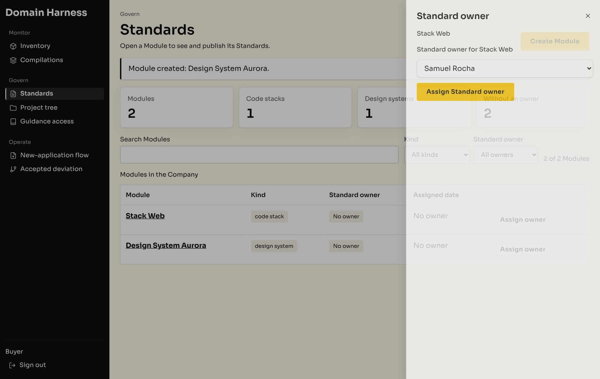
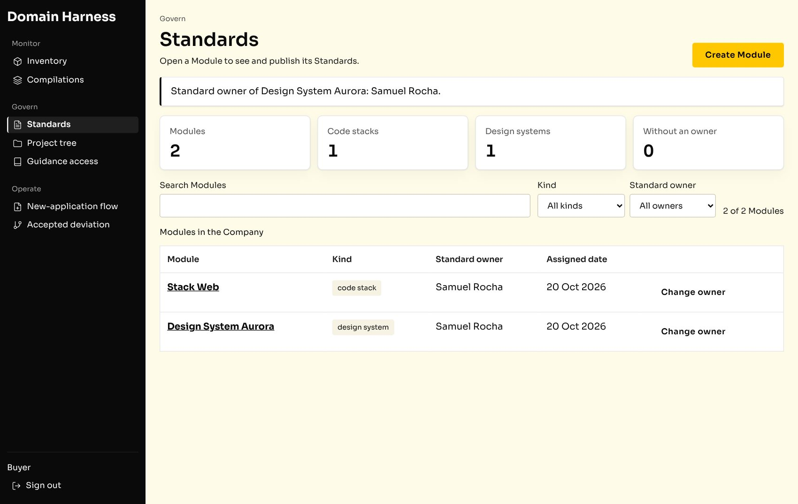
Publique os padrões Standard owner
O dono abre o módulo pelo nome e clica em Publish standard.
Stack de código
- Escolha o Project scope: em qual projeto o padrão começa a valer (padrão: a empresa toda).
- Informe Category (language, framework ou library), Name e, se quiser, a Version constraint (ex.:
^19). - Defina o Status e, para proibições, escreva a Correction instruction: é exatamente o que o agente de IA vai ler para se corrigir.
- Clique em Publish. O painel confirma com o identificador e a versão.
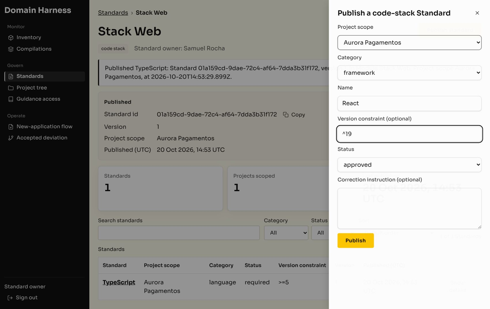
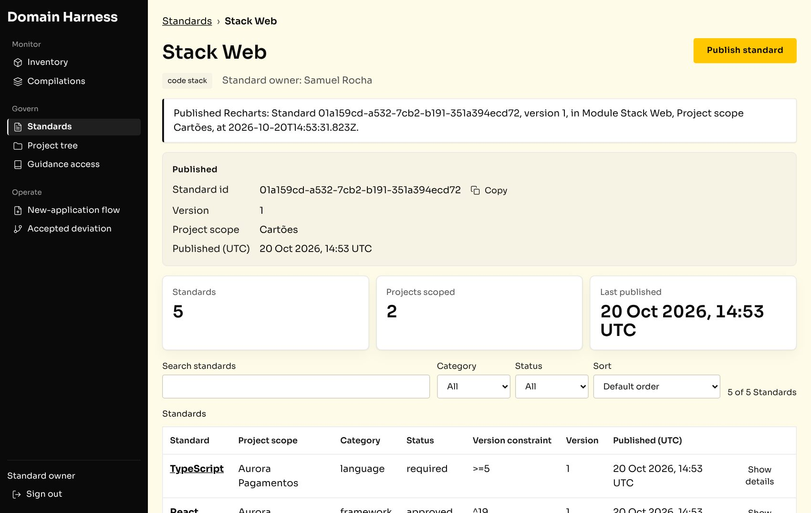
Design system
Em módulos de design system, escolha primeiro o Entry kind: component (com regra de uso e tokens), token (ex.: color-brand-primary) ou import (ex.: o pacote @aurora/ui obrigatório).
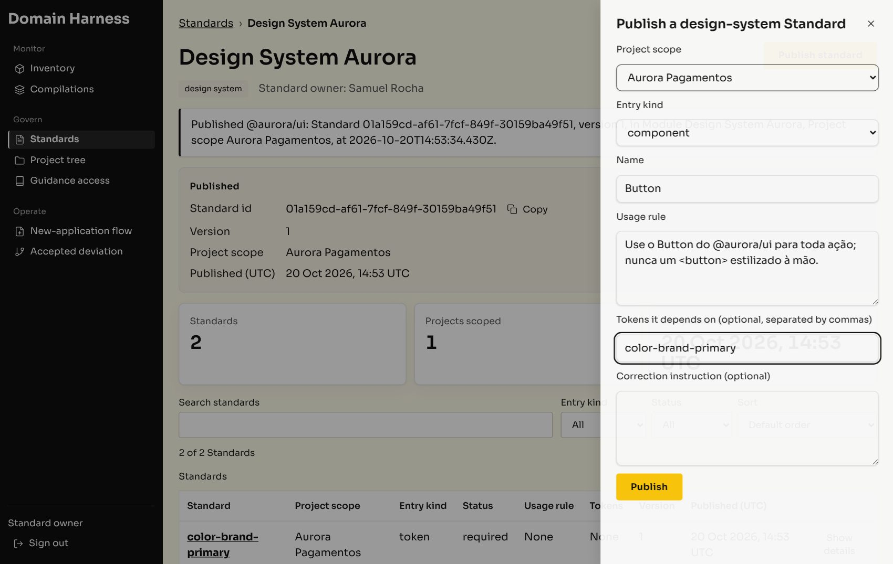
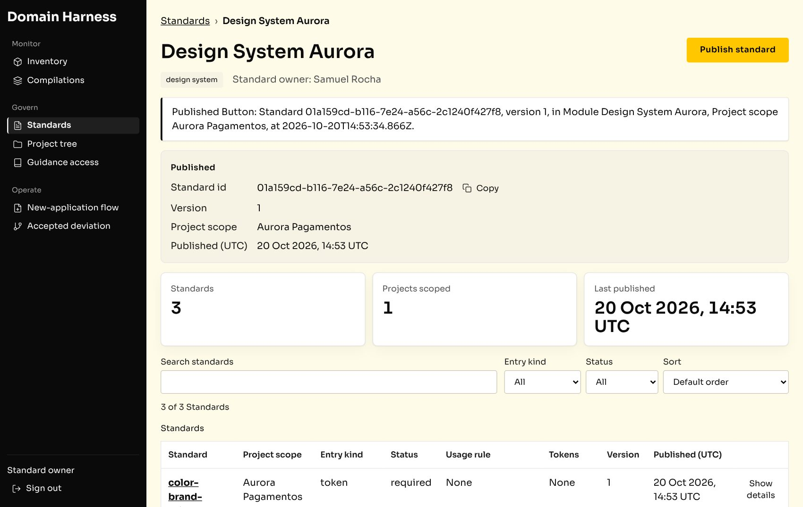
Para alterar um padrão, clique no nome dele na tabela, mude o que precisar e publique: isso cria a versão 2, 3… do mesmo padrão. Nada é sobrescrito; o histórico fica guardado.
Se outro padrão já ocupa o mesmo assunto no mesmo projeto (ex.: duas regras para “React”), a publicação é recusada e a mensagem diz qual padrão está no caminho.
Veja o que vale em cada projeto e trave o essencial
Em Project tree, selecione um projeto. A aba Effective standards mostra todos os padrões que valem ali e de qual projeto cada um vem. No Portal do Cliente, por exemplo, vale tudo o que foi definido para a empresa e também a biblioteca Recharts, aprovada só para Cartões.
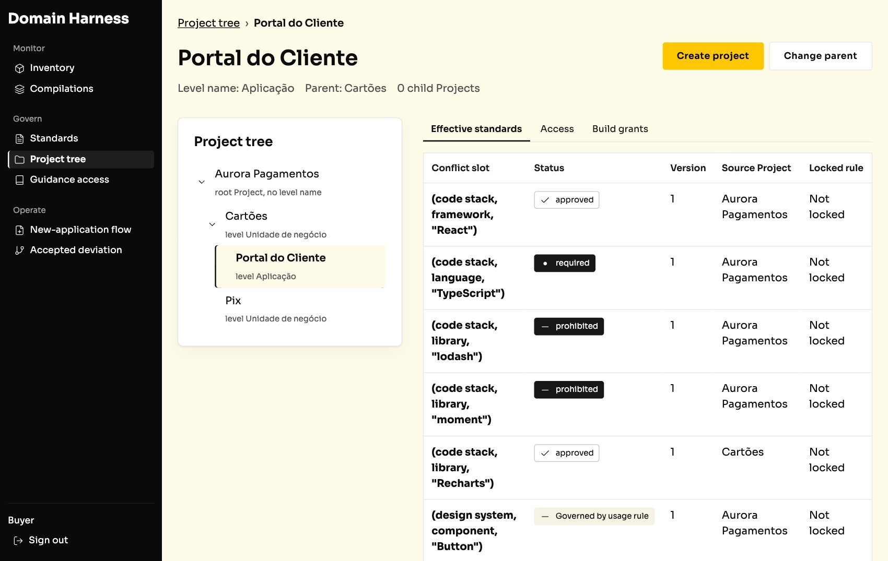
Regras travadas (Buyer)
Clique em Mark as Locked rule em um padrão que nenhum projeto abaixo pode contrariar (ex.: “TypeScript é obrigatório”). A árvore passa a indicar quantas regras travadas cada projeto tem.
Permissões (Buyer)
Na aba Build grants, clique em Grant build para que uma conta possa criar aplicações naquele projeto. A permissão vale só para o projeto selecionado, não para os que estão abaixo dele. A aba Access funciona igual para a permissão de criar subprojetos diretamente abaixo do projeto.
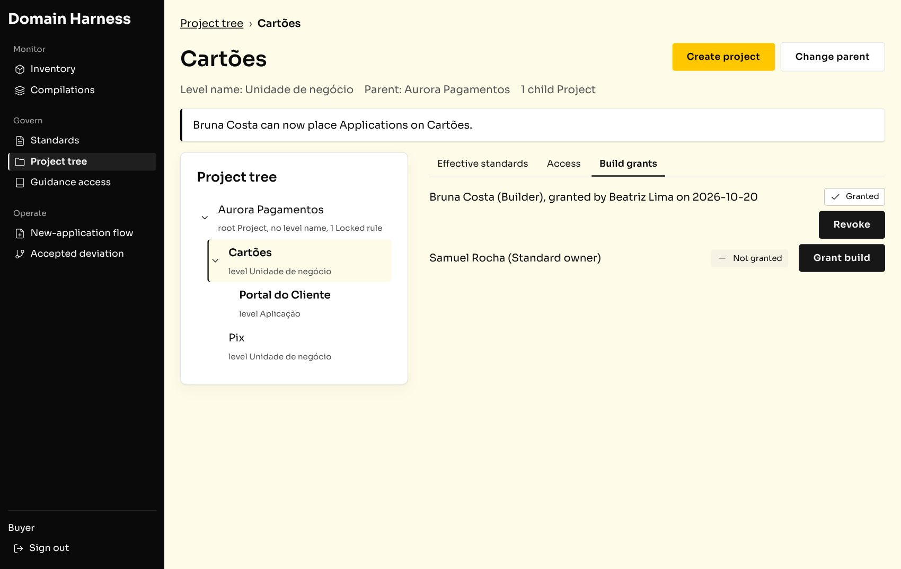
Crie uma nova aplicação
O fluxo em New-application flow tem três etapas: Place (posicionar) → Generate (gerar o kit) → Result.
Uma vez só, o Buyer configura o Guidance endpoint no quadro “Company setup”, no fim da página: o endereço do serviço da empresa que os agentes vão consultar. Sem ele, o kit não pode ser gerado. Quem não é Buyer vê ali só o endereço atual, para leitura, e pede ao Buyer quando precisar mudá-lo.
- Na aba Place an application, descreva a aplicação e escolha o Project. Clique em Place the Application.
- O fluxo avança sozinho para Generate Boilerplate. Escolha a ferramenta (Claude Code ou Cursor) e clique em Generate the Boilerplate.
- Baixe o pacote em Download the archive e descompacte-o na raiz do repositório da aplicação. Com o token de acesso configurado (veja abaixo), o agente já consulta os padrões do projeto.
O token de acesso do agente
No piloto, o serviço de orientações só responde a quem envia o token de acesso da empresa. A equipe do piloto entrega esse valor a cada Builder; ele nunca vem dentro do kit. Guarde-o na variável de ambiente DH_GUIDANCE_TOKEN, no ambiente de onde o agente é aberto:
- Claude Code: acrescente
export DH_GUIDANCE_TOKEN="<token recebido>"ao perfil do seu shell (por exemplo~/.zshrc), abra um terminal novo e inicie o Claude Code nele. - Cursor aberto pelo Dock ou pelo menu: o Cursor não lê o perfil do shell. No macOS, rode
launchctl setenv DH_GUIDANCE_TOKEN "<token recebido>"e reabra o Cursor; ou abra o Cursor a partir de um terminal que já tenha a variável (cursor .). Olaunchctl setenvvale só até você encerrar a sessão ou reiniciar o Mac: depois disso, repita o comando (ou abra o Cursor pelo terminal).
Sem o token, o agente não consegue consultar os padrões. Se a equipe do piloto trocar o token, atualize a variável e reinicie o agente.
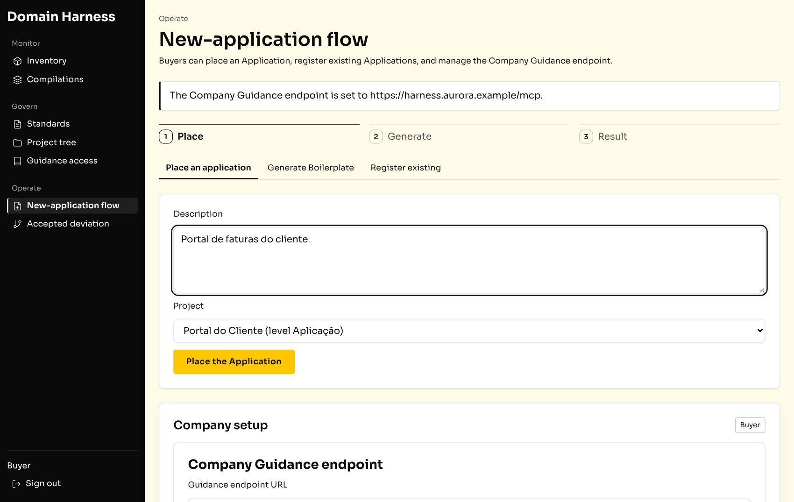
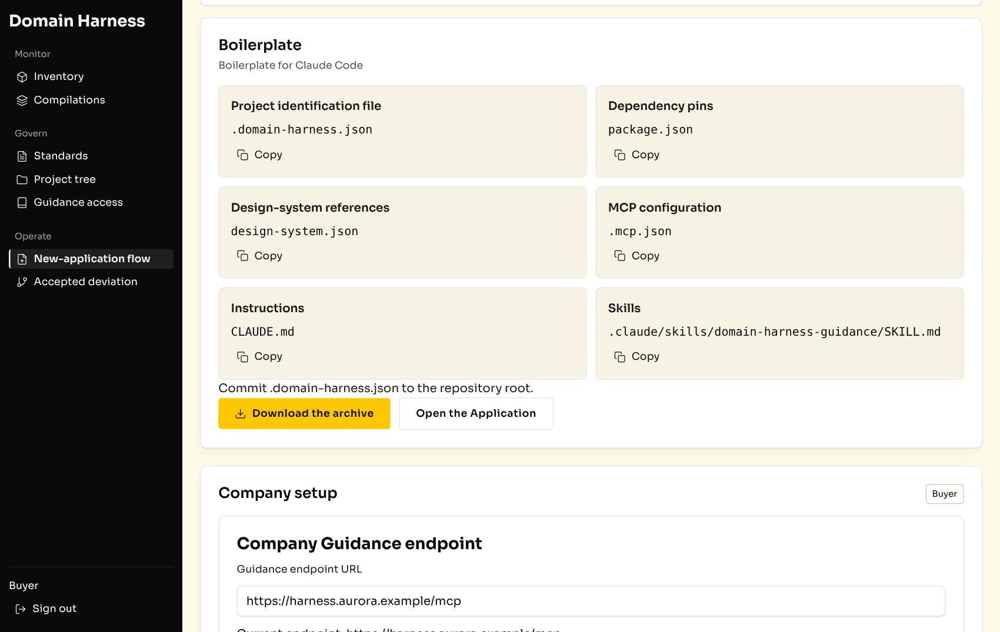
| Arquivo do kit | Para que serve |
|---|---|
.domain-harness.json | Identifica a aplicação e o projeto. Deve ficar na raiz do repositório. |
.mcp.json | Conecta o agente ao serviço de orientações da empresa. |
CLAUDE.md / regras do Cursor | Instruções para o agente consultar os padrões antes de decidir, com a instrução de correção de cada padrão que tiver uma. |
package.json | Dependências já fixadas conforme os padrões aprovados. |
design-system.json | Referências do design system em vigor. |
| Skills | Habilidade pronta de “consultar orientação” para o agente. |
Aplicações que já existem
O Buyer pode trazer para a governança uma aplicação já construída: aba Register existing, descrição e projeto. O painel mostra o arquivo de identificação para ser adicionado ao repositório.
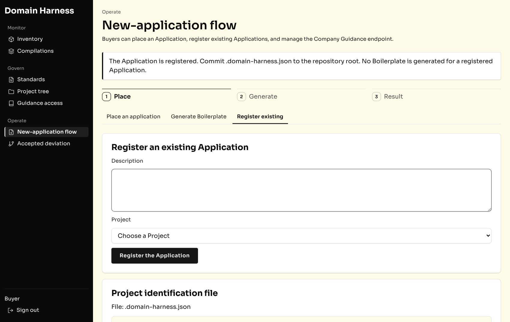
Acompanhe: inventário e evidências
O Inventory lista todas as aplicações da empresa, agrupadas por ferramenta de IA (ou por projeto). Dá para buscar, filtrar por projeto e ordenar.
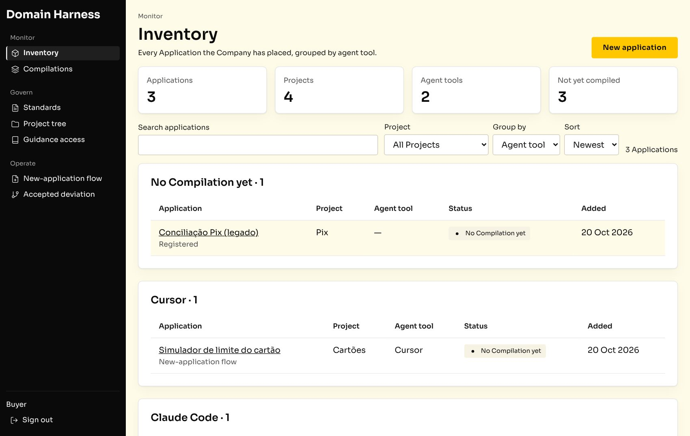
Clique em uma aplicação para ver suas evidências: execuções do Gate, desvios encontrados e histórico. A partir de um desvio, o Buyer pode registrar a aceitação diretamente.
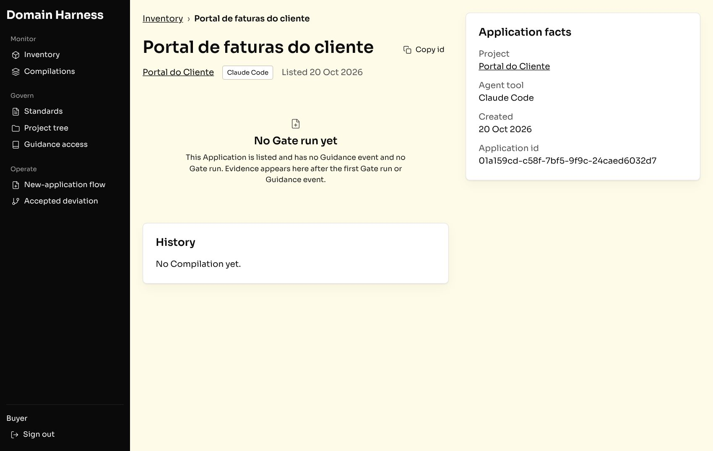
Antes da primeira evidência, o Buyer confirma o catálogo. Em Compilations, aba Schemas, leia o catálogo dos registros que o serviço da empresa envia e clique em I have read catalog 1.0.0. Até isso ser feito, o serviço não envia nenhum registro: consultas do agente e execuções do Gate não chegam ao painel.
Em Compilations, o Buyer acompanha a saúde do serviço da empresa: qual pacote de padrões está ativo, se está atualizado, quantos registros estão pendentes e se algum foi descartado.
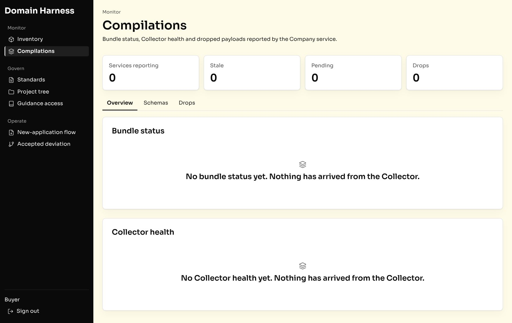
Controle quem lê as orientações Buyer
Cada consulta que um agente faz gera um registro de orientação (Guidance event), guardado dentro da empresa. Em Guidance access, o Buyer decide quais papéis podem ler esses registros e por quantos dias eles são mantidos.
- Marque os papéis que podem ler. O Buyer sempre pode.
- Ajuste a retenção (1 a 3650 dias; o padrão é 90).
- Uma barra aparece com Save Guidance access e Discard; nada muda até salvar.
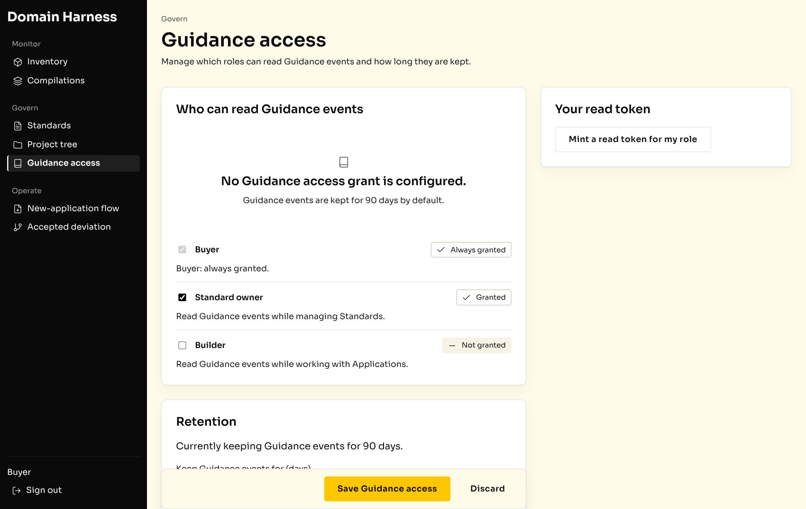
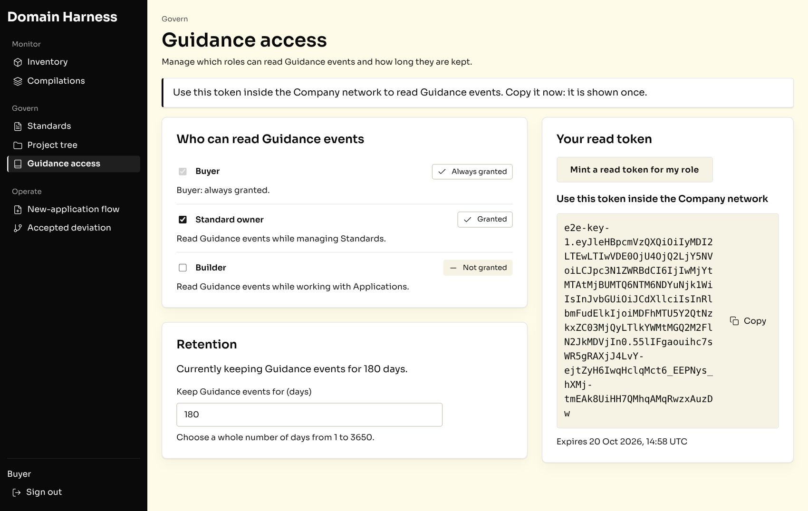
Mint a read token for my role gera um token temporário para consultar os registros pela API de leitura, dentro da rede da empresa.
Aceite desvios com prazo e justificativa Buyer
Às vezes uma aplicação precisa, por um tempo, de algo que o padrão proíbe. Em vez de desligar a regra para todos, o Buyer registra uma exceção pontual:
- Copie a linha do desvio do log do Gate no CI e cole em CI Gate deviation log line. Clique em Use this line: padrão, assunto e regra são preenchidos sozinhos.
- Escolha a Application. O painel confirma qual versão do padrão está em vigor para ela.
- Escreva a Justification, defina Start e End e o Alert interval (em horas).
- Clique em Record Accepted deviation. A exceção aparece em Stored acceptances como Active até vencer.
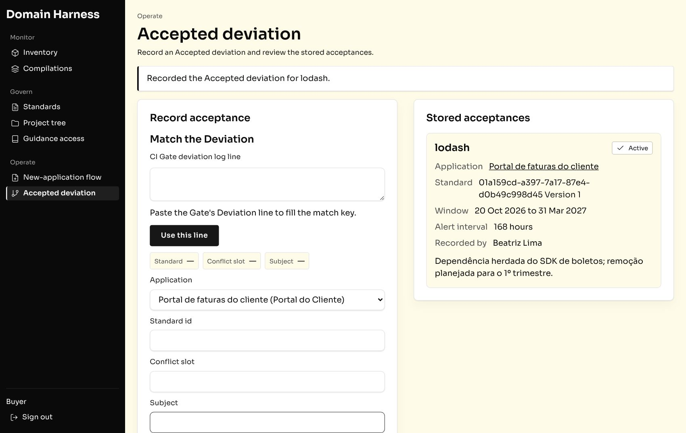
No celular
O painel funciona em telas pequenas. O menu fica atrás do botão ☰, os números de resumo ficam lado a lado e as tabelas rolam para o lado.
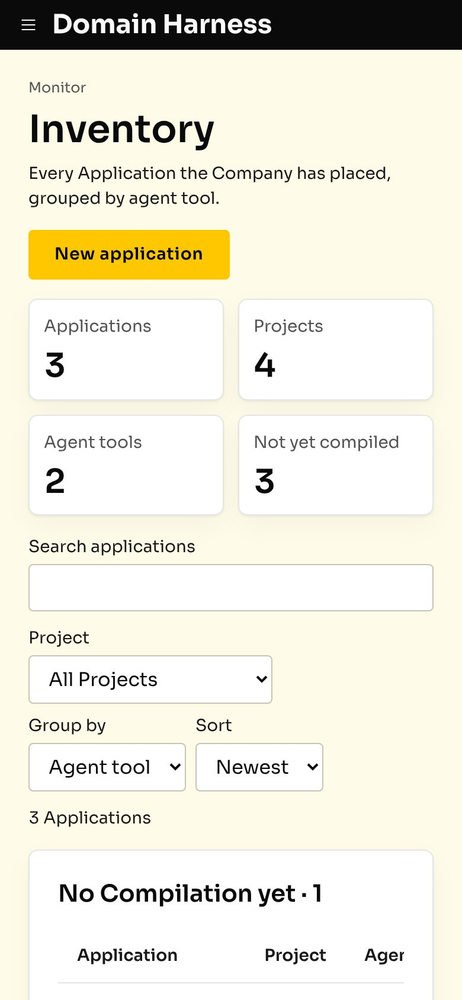
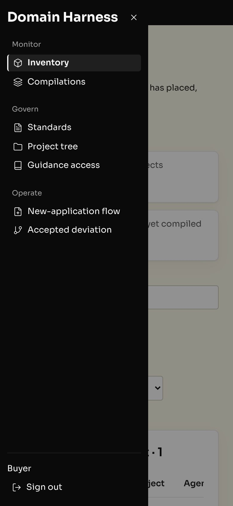
Roteiro de teste sugerido
Para o piloto, pedimos que cada pessoa percorra o roteiro do seu papel e anote o que foi confuso, lento ou faltou. Leva de 20 a 30 minutos.
Buyer
- Entrar pelo link do e-mail.O link chegou rápido? Ficou claro o que fazer?
- Criar 2 ou 3 projetos que espelhem sua empresa.Os nomes de nível fazem sentido para vocês?
- Criar um módulo de code stack e um de design system, e atribuir os donos.
- Conceder build grant a um construtor em um projeto.
- Configurar o Guidance endpoint e criar uma aplicação até baixar o Boilerplate.
- Em Compilations → Schemas, clicar em I have read catalog 1.0.0.Sem isso, nenhuma evidência chega ao painel.
- Travar uma regra importante e conferir os padrões efetivos de um projeto filho.
- Registrar um desvio aceito (a equipe do piloto fornece uma linha de exemplo do Gate).
Standard owner
- Publicar 3 padrões: um obrigatório, um aprovado e um proibido com instrução de correção.
- Publicar um padrão válido só para um projeto específico.
- Editar um padrão e conferir que virou a versão 2.
Builder
- Criar uma aplicação em um projeto com permissão e gerar o kit para sua ferramenta.
- Tentar criar em um projeto sem permissão e avaliar se a mensagem é clara.
- Definir
DH_GUIDANCE_TOKENcom o token recebido da equipe do piloto.Claude Code: no perfil do shell. Cursor aberto pela interface:launchctl setenvno macOS, ou abrir o Cursor por um terminal. - Abrir o kit no repositório e iniciar uma conversa com o agente.O agente consultou os padrões antes de escolher bibliotecas?
Como enviar feedback: mande para a equipe do piloto o que tentou fazer, o que esperava e o que aconteceu, com um print sempre que possível. Mensagens de erro do painel são ótimas pistas: copie o texto exato.
Dúvidas frequentes
O link de acesso diz que já foi usado ou expirou.
Cada link vale uma vez e por 15 minutos. Digite o e-mail de novo na tela de login para receber outro.
Fui desconectado do painel.
A sessão dura 12 horas. Basta pedir um novo link.
Apareceu “Nothing was changed” (ou “Nothing was created”).
A ação não era permitida para o seu papel ou faltou alguma informação. A mensagem diz o motivo e quem pode fazer a ação. Nada foi alterado, então é seguro tentar de novo.
Não consigo publicar em um módulo.
Só o dono atual do módulo publica. Peça ao Buyer para conferir quem é o dono em Standards.
Não consigo criar uma aplicação em um projeto.
Você precisa de um build grant naquele projeto específico (a permissão não passa para os projetos de baixo). Peça ao Buyer em Project tree → Build grants.
O Boilerplate diz que o Guidance endpoint não está configurado.
O Buyer precisa preencher o endereço do serviço uma vez, em New-application flow → Company setup.
Alguma opção fala em “Team (first sale)”.
Alguns recursos, como criar ou mover projetos, travar regras e registrar desvios aceitos, fazem parte do plano Team. No piloto, as empresas de teste já estão nesse plano.
Meu código ou meus prompts vão para o Domain Harness?
Não. O serviço de orientações roda dentro da empresa. O painel recebe apenas registros resumidos, sem código, prompts ou conteúdo dos padrões.
O painel vai ficar em português?
No piloto, a interface está em inglês. Este guia traduz cada termo na seção Conceitos essenciais.